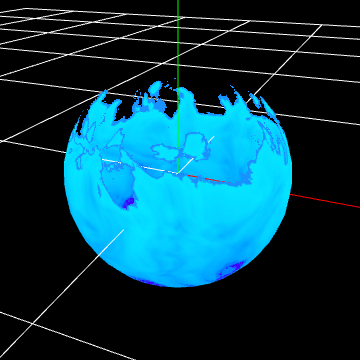
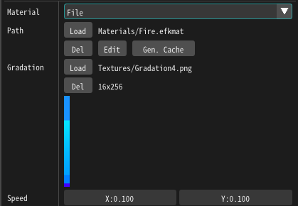
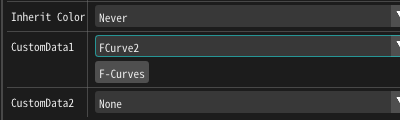
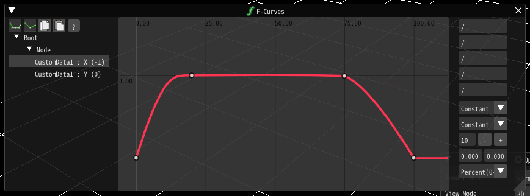

03. 有序材质的卡通火焰。¶
这个标题是个什么东西？？？
制作¶
在本章中，我们将在上一章制作的特效的基础上做出更改。 为了显示清楚，我们更改了粒子的生存时间。
参数¶
Effekseer的材质有一个名叫参数的节点。 这个叫参数的节点让你可以在Effekseer中改变材质的参数。
首先，为了从外部编辑特效的颜色，我们将把梯度图像替换为一个参数。
添加一个参数图像节点。
然后，把它连接到采样图像节点。
给参数节点输入一个名字。这个名字会显示在Effekseer中，用于将图像与Effekseer中的配置相关联。 Therefore, try not to change it too much. 因此，不要改变太多。（？？？） 这次，因为我们替换的是梯度，我们将其命名为Gradation。
将图像的默认值设置为Textures/Gradation2.png。
Effekseer现在也显示了梯度参数。 因为目前显示的依然是默认图像，我们将设置一个新图像。
这一次，设置为Textures/Gradation4.png。
特效的图案已经被替换了。
在这个例子中，我试着替换纹理，但是你也可以使用数值作为参数。
让我们将图像流动的速度设置为参数。
添加一个参数2节点。
命名为Speed。
将默认参数设置为(0.1,0.1)。
将其连接到移动UV节点的Speed。
Effekseer将显示速度参数，你可以改变它的值。
更改它的值将改变速度。 在这个例子中，默认值就很合适，所以我们将值保留在(0.1,0.1)。
这些可以在外部设置，无需将参数内置于材质中。
自定义数据¶
就像现在这样，你只是将参数外部化了，但火焰依旧是连续地流动。 自定义数据可用于设置开始和结束。
在这个例子中，我们将设置一个名为自定义数据的节点。 这个节点和参数类似，但允许你为特效中的每个粒子设置不同的值，也允许你设置F曲线和其他参数。
这次，我们将通过移动梯度贴图将火焰扑灭。
通过一个外部参数移动梯度的参考位置，实现淡出。
使梯度图像向透明的方向移动，从而使它变得透明。
首先，我们将添加一个自定义数据1节点。
因为是UV，将它连接到RG。
然后，在Effekseer的基础渲染设置面板设置自定义数据。 在这个例子中，我们将使用F曲线，因为我们将移动UV以实现淡入和淡出。
设置F曲线中的R值，-1表示关闭，0表示显示。
-1引用了梯度图像的上部分。 表示图像会消失。
然后特效现在会淡入和淡出。
最后，你可以通过下面的链接下载本章中制作的特效。
总结¶
这次我们制作了火焰的一个变种。 为每个特效制作一个材质很费事，所以制作一个可以用于很多地方的通用的材质是非常重要的。